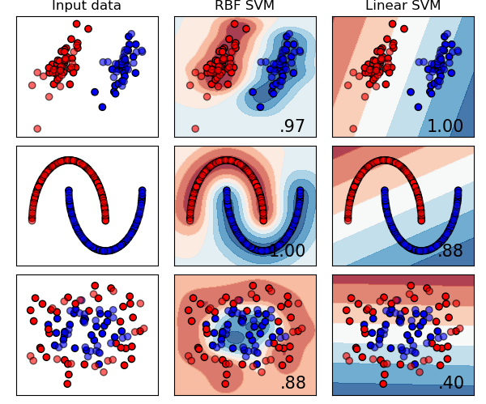
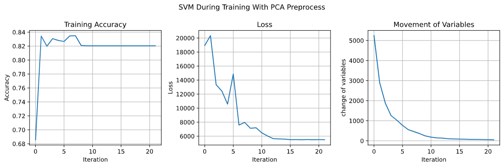
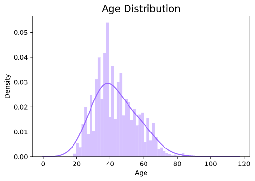
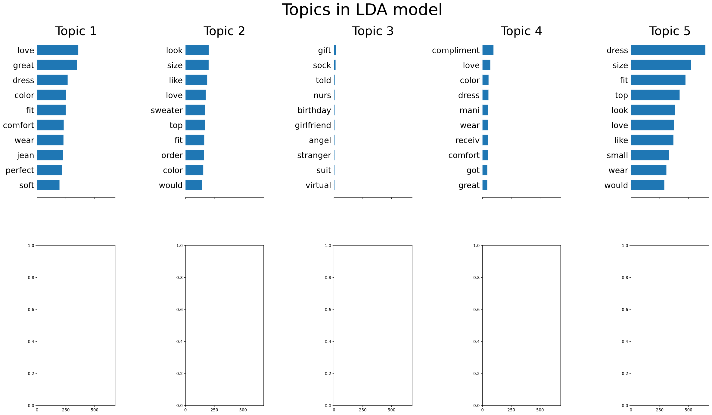
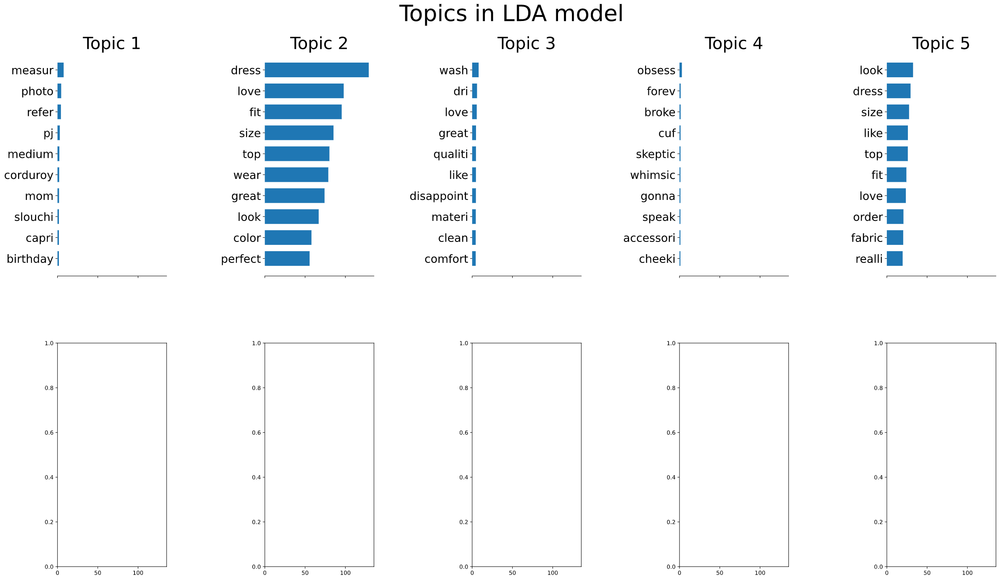
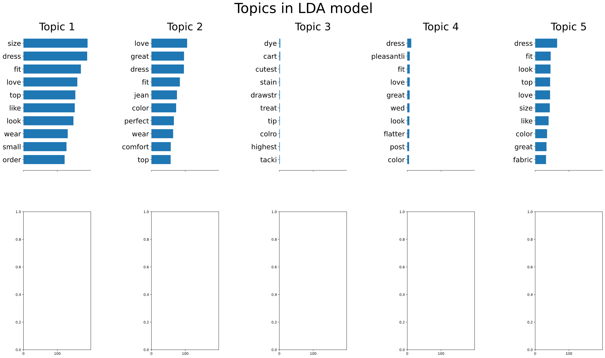
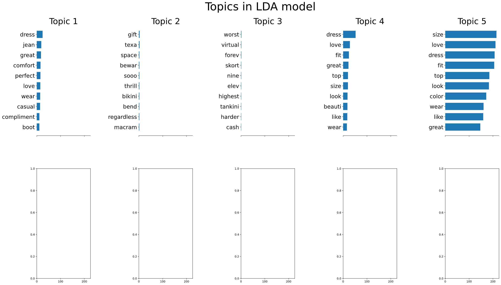
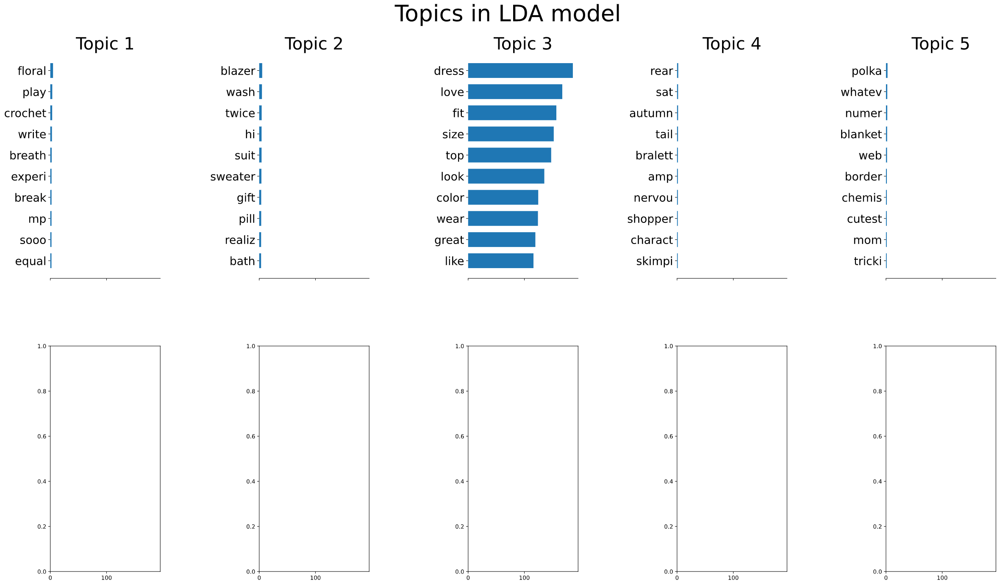
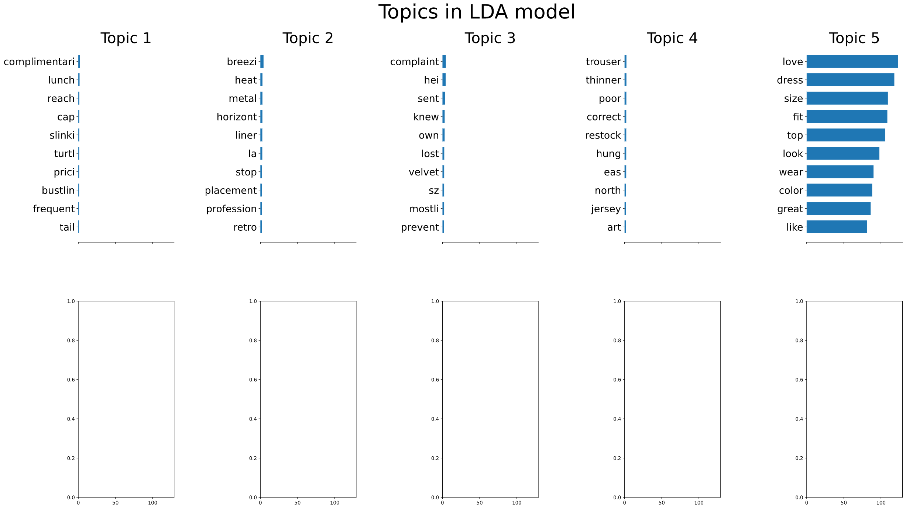

From SVM to SMO and Random Feature Kernel Approximation
106033233 資工21 周聖諺
1. Abstract
In this article, I will derive SMO algorithm and the Fourier kernel approximation which are well-known algorithm for kernel machine. SMO can solve optimization problem of SVM efficiently and the Fourier kernel approximation is a kind of kernel approximation that can speed up the computation of the kernel matrix. In the last section, I will apply EDA on the dataset "Women's Clothing E-Commerce Review" and conduct a evaluation of my manual SVM.
2. Sequential Minimal Optimization(SMO)
The SMO(Sequential Minimal Optimization) algorithm is proposed from the paper Sequential Minimal Optimization: A Fast Algorithm for Training Support Vector Machines in 1998 by J. Platt. In short, SMO picks 2 variables αi,αj for every iteration, regulate them to satisfy KKT condition and, update them. In the following article, I will derive the whole algorithm and provide the evaluation on the simulation and real dataset.
where α1old and α2old are α1 and α2 of the previous iteration. Since we see αi,i≥3 as constant, αi shouldn't depends on update variables α1,α2.
Since we want to minimize the gradient, let the gradient be 0.
−ηα2+ηα2old+y2(E1−E2)=0
Then we can find the relation between new and old α2 as following
α2=α2old+ηy2(E1−E2)
To make the notation more clear to identify, we denote α2new as the new value of the update.
α2new=α2old+ηy2(E1−E2)
2.3 Step 2. Clip with Bosk Constraint
The new values should satisfy the complementary slackness as
α1y1+α2y2=ζ,0≤αi≤C
Since y1,y2 may have different labels, thus we consider 2 cases. The first case is y1=y2 as the left part of the figure 1 and another case is y1=y2 which corresponds to he right part of the figure.
Note that there is another line in quadrant 3 in the case 2 but it doesn't show in the figure due to the limit of the size.
Figure 1
2.3.1 Case 1: Inequality
When y1=y2, the equation is either α1−α2=k or α1−α2=−k where k=∣ζ∣ is a positive constant.
First, we consider the blue area α1−α2=−k. We can see α1∈[C,k]=[C,α2−α1]. The upper bound should be C and the lower bound should be α2−α1.
BU=C,BL=α2−α1
Next, we consider the grey area α1−α2=k. We can see α1∈[0,C−k]=[0,C+α2−α1]. The upper bound should be C+α2−α1 and the lower bound should be 0.
BU=C+α2−α1,BL=0
Combine 2 cases, both new and old values should satisfy the bosk constraint. The upper bound of α2new can be written as
BU=min(C,C+α2old−α1old)
and the lower bound is
BL=max(0,α2old−α1old)
2.3.2 Case 2: Equality
When y1=y2, the equation is either α1+α2=k or α1+α2=−k where k is a positive constant.
In similar way, we can derive the case of equality. The upper bound can be written as
BU=min(C,α2old+α1old)
and the lower bound is
BL=max(0,α2old+α1old−C)
2.3.3 Clip The Value
According the bound we've derived, we need clip the updated variable α2new to satisfy the constraint. In addition, we denote the new value after clipping as α2∗.
α2∗=CLIP(α2new,BL,BU)
2.3.4 Update α1
We've know the complementary slackness.
α1∗y1+α2∗y2=α1oldy1+α2oldy2=ζ
Move the updated value α1∗ to the left side and we can get
α1∗=y1α1oldy1+α2oldy2−α2∗y2
α1∗=α1old+y1y2(α2old−α2∗)
2.4 Step 3. Update Bias
The only equation that contains bias b is the function fϕ(x)=b+∑i=1Nαiyik(xi,x). When 0<αi∗<C, it means that the data point xi is right on the margin such that fϕ(x)=yi, fϕ∗(xi)=yi and the bias b1∗,b2∗ can be derived directly. Note that for convenience, fϕ∗(xw)=∑i=3NαiyiKi,w−α1∗y1K1,w−α2∗y2K2,w+b∗=yw contains updated variables α2∗,α2∗,b∗.
If 0<α1∗<C, the data point x1 should right on the margin and fϕ∗(x1)=y1. The bias derived from α1.
When the data point xi,xj are both not on the margin, we choose the average of b1∗,b2∗ as the updated value.
b∗=2b1∗+b2∗
For more detail, please see the pseudo code.
2.5 Pseudo Code
Given C, otherwise the default value is C=5
Given ϵ, otherwise the default value is ϵ=10−6
Given max-iter, otherwise the default value is max-iter=103
For all αi=0,1≤i≤N
b=0
move=∞
while(move>ϵ and iter≤max-iter):
α1∗=α2∗=b∗=move=0
for(n in N/2):
Choose the index i,j from 1 to N
Ei=f(xi)−yi
Ej=f(xj)−yj
η=Ki,i+Kj,j−2Ki,j
αjnew=αj+ηyj(Ei−Ej)
Bosk Constraint
if(yi=yj):
BU=min(C,αj+αi)
BL=max(0,αj+αi−C)
else:
BU=min(C,C+αj−αi)
BL=max(0,αj−αi)
αj∗=CLIP(αjnew,BL,BU)
αi∗=αi+yiyj(αj−αj∗)
Update Bias
bi∗=−Ei−yiKi,i(αi∗−αi)−yjKj,i(αj∗−αj)+b
bj∗=−Ej−yiKi,j(αi∗−αi)−yjKj,j(αj∗−αj)+b
if(0≤αi≤C):
b∗=bi∗
else if(0≤αj≤C):
b∗=bj∗
else:
b∗=2bi∗+bj∗
move=move+∣α1∗−α1∣+∣α2∗−α2∣+∣b∗−b∣
αi=αi∗,αj=αj∗,b=b∗
iter=iter+1
3. Fourier Kernel Approximation
The Fourier kernel approximation is proposed from the paper Random Features for Large-Scale Kernel Machines on NIPS'07. It's a widely-used approximation to accelerate the kernel computing especially for the high dimensional dataset. For a dataset with dimension D and data points N, the time complexity of computing the exact kernel is O(DN2) and the Fourier kernel approximation is O(SN3) with S samples. While the dimension goes up, the approximation remains the same computing time because it is regardless to the dimension of the dataset.
3.1 Bochner's Theorem
If ϕ:Rn→C is a positive definite, continuous, and satisfies ϕ(0)=1, then there is some Borel probability measure μ∈Rn such that ϕ=μ^
Thus, we can extend the Bochner's theorem to kernel.
3.2 Theorem 1
According to Bochner's theorem, a continuous kernel k(x,y)=k(x−y)∈Rd is positive definite if and only if k(δ) is the Fourier transform of a non-negative measure.
If a shift-invariant kernel k(δ) is a properly scaled, Bochner's theorem guarantees that its Fourier transform p(ω) is a proper probability distribution. Defining ζω(x)=ejω′x, we have
k(x−y)=∫ωp(ω)ejω′(x−y)dω=Eω[ζω(x)ζω(y)]
where ζω(x)ζω(y) is an unbiased estimate of k(x,y) when ω is drawn from p(ω).
With Mote-Carlo simulation, we can approximate the integral with the summation over the probability p(ω).
z(x)′z(y)=D1j=1∑Dzwj(x)zwj(y)
zω(x)=2cos(ωx+b)whereω∼p(ω)
In order to approximate the RBF kernel k(k,y)=e−2∣∣x−y∣∣22, we draw ω from Fourier transformed distribution p(ω)=N(0,1).
4. Experiments
4.1 Simulation With Exact Kernel

The parameters of SVM:
C: 0.6
γ of RBF: 2
Here we generate 3 kinds of data. The first row is generated by a Gaussian mixture model. The second row is like a moon generated by Scikit-Learn package. The third one is also generated by Scikit-Learn package and the package generate 2 circles, one is in the inner side and the other one is in the outer side.
The SMO and kernel seem work properly even under noise and nonlinear dataset.
4.2 Simulation With Approximated Kernel
We draw 200 samples from p(ω) to approximate the RBF kernel. As we can see, the testing accuracies are close to the ones of exact kernels in most of cases.
4.3 Real Dataset
4.3.1 PCA Preprocess
Apply SVM on the "Women's Clothing E-Commerce Review Dataset" with C = 0.6 and γ of RBF kernel = 2, the training accuracy is 82.03% and the testing accuracy is 81.54%. The accuracy, loss and, the movement of variables are showed in the following graph.

As we can see, the movement of variable gets smaller during training and converge around 50 and the accuracy remains about 82%.
4.3.2 LDA Preprocess
The training accuracy is also 82.03% and the testing accuracy is 81.54%, but the curves are smoother than the ones of PCA.
5. Data Analysis
5.1 Overview
The dataset is called "Women’s Clothing E-Commerce Review" which contains reviews written by customers for a online clothing shop. It has 9 features and each feature represents the meaning as the following table.
Features
Description
Clothing ID
Integer Categorical variable that refers to the specific piece being reviewed.
Age
Positive Integer variable of the reviewers age.
Title
String variable for the title of the review.
Review
String variable for the review body.
Rating
Positive Ordinal Integer variable for the product score granted by the customer from 1 Worst, to 5 Best.
Recommended IND
Binary variable stating where the customer recommends the product where 1 is recommended, 0 is not recommended.
Positive Feedback Count
Positive Integer documenting the number of other customers who found this review positive.
Division Name
Categorical name of the product high level division.
Department Name
Categorical name of the product department name.
Class Name
Categorical name of the product class name.
Age Distribution

As we can see, the peak of the age distribution is about 40. The population below 40 years old is a half of total users.
The average age of the customers buying "casual bottoms" is 26 which is much lower the average age of total customers 42.
Rating Distribution
According to the graph, most of the users(more than 50%) gives 5 points in their comments.
The average rating of all goods is 4.2 but the class "Trend" has only 3.8.
Topics

The graph is the result of LDA with 5 topics. Ttopics are 3 and 4 seems interesting. The topic 3 seems related to boys and their girlfriend, since words like girlfriend, gift and, birthday appear in the top 10 words. We can infer that most of purchases in this topic are the gifts for girlfriends by the boyfriends. The topic 4 seems also related to gift but not between lovers. The comment are mainly about receivers' compliment.
5.2 Rating
Rating Score 5
There are many positive words in the word cloud like perfect, comfort, style...
Rating Score 1
An interesting thing is that "cute" seems neutral since it appears in both side. It may be caused by cultural difference between western and eastern societies.
5.3 Ages
LDA
Love and cute are everywhere. Also, some positive words and common nouns appear in every ages. It's boring for me to focus on that common phenomenon. Here I just mention something interesting from the data.
Less Than 30

An interesting thing is that the topic 4 contains broke, cheeky, obsess and, forever. It seems that topic 4 is about the relationship. In addition topic 4 only appears under 30 years old.
30s

The topic 4 contains wed, love and, pleasant. It perhaps is about wedding.
40s

It's a little bit weird that one topic is about the "bikini" and the other one is about "tankini" which is a kind of swimsuit covering the whole body.
50s

I don't know why there is a topic about "bralett" which means "sexy intimates". Does it mean the shirley valentine for the customers?
More Than 60

Word Cloud
Less Than 30
30s
40s
50s
More Than 60
7. Conclusion
In this article, we've seen detailed derivation of SMO algorithm and the implementation of SVM. We've also conducted the evaluation on the simulated dataset and real dataset. On the other hand, we've reviewed the Fourier kernel approximation briefly and compared the approximation kernel with the exact kernel. Finally, we've also seen an EDA on the Women's E-Commerce Clothing Reviews dataset and had some interesting insights.